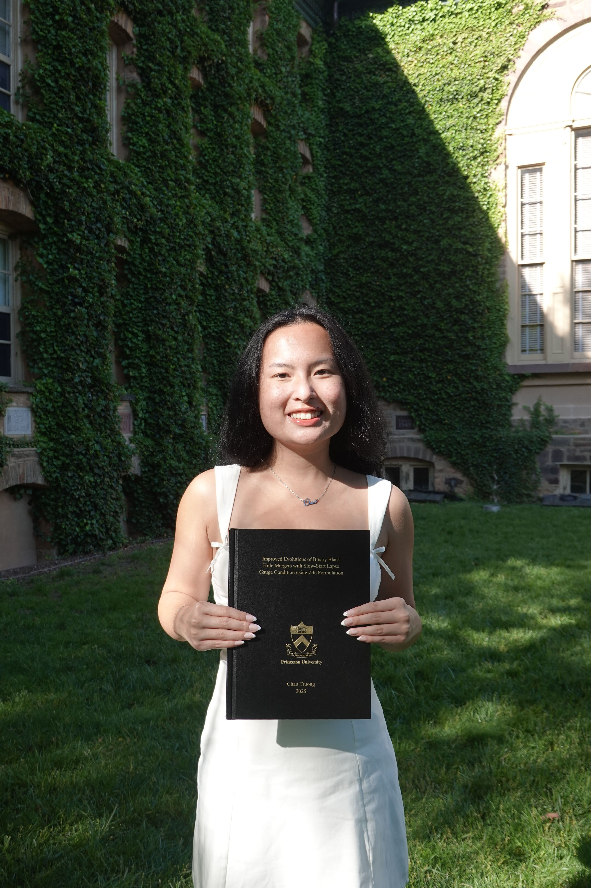

Hi! I'm Chau Truong, a second-year Physics PhD student at Wake Forest University advised by Professor Alejandro Cárdenas-Avendaño. My research interests are in black holes and gravitational waves, specifically how gravitational wave signals can help us learn more about the black holes that emit them.
I received my A.B. in Physics, complimented by a minor in Computer Science, from Princeton University in 2025, where I was a QuestBridge Scholar. I am also a member of the Simons Collaboration on Black Holes and Strong Gravity.
Email: truoc25@wfu.edu